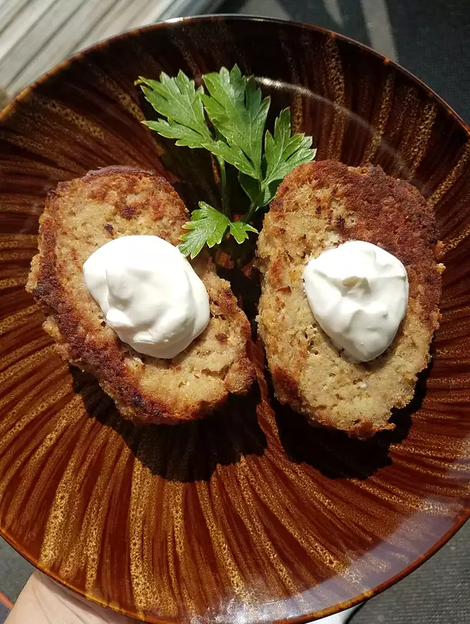

Klupskies (Polish Burgers)

This Polish burger recipe is best served when topped with cheese and served on a hamburger bun in a traditional way.
Often referred to as Kotlety Mielone
Ingredients
- 1 pound ground beef
- 1 small onion, diced
- ½ green pepper, diced
- 1 egg
- 2 tablespoons ketchup
- ¼ teaspoon sea salt
- 2 slices white bread, torn into small pieces
- cooking spray with olive oil
Recipe Instructions
- Mix ground beef, onion, green pepper, egg, ketchup, and sea salt together in a bowl.
- Mix in white bread pieces until evenly distributed. Form the mixture into 4 patties.
- Spray a large skillet with olive oil cooking spray and set over medium heat. Cook the burgers until well-browned on the bottoms, about 10 minutes.
- Flip the burgers and cook until the meat is no longer pink and the juices run clear, 8 to 10 more minutes.
Chef's Note:
For the juiciest burgers, do not press the meat and try to only flip once.
Nutrition Facts
Per Serving: 270 calories; protein 21.9g; carbohydrates 10.6g; fat 15.1g; cholesterol 115.3mg; sodium 362.7mg.
Return to top
Return to Main Menu